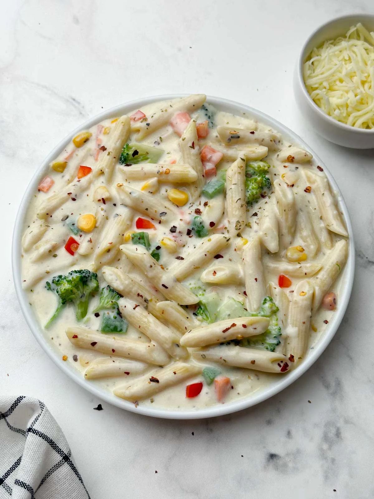

White Sauce Pasta

Description
White Sauce Pasta is a creamy Italian-inspired dish
made with pasta, milk, butter, flour and seasonings.
Ingredients
- 200g pasta
- 2 tablespoons butter
- 2 tablespoons flour
- 1 cup milk
- Garlic
- Black pepper
- Oregano
- Salt
- Cheese
Steps
- Boil pasta in salted water.
- Melt butter in a pan.
- Add flour and stir.
- Slowly add milk and mix until creamy.
- Add garlic, pepper, oregano and salt.
- Add cooked pasta to the sauce.
- Mix well and add cheese.
- Serve hot.
Home